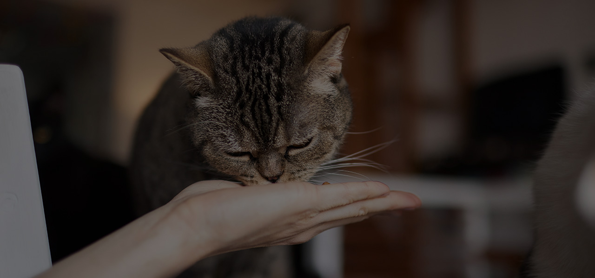
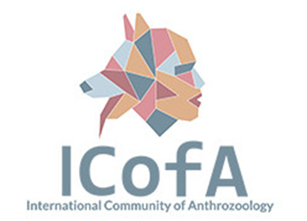

Photo Credit: Adobe Stock
Learn how to prepare, evaluate and certify your feline companion as a therapy cat.
Not every cat is suited for therapy work, but many have the right temperament. Calm, social, and patient cats can thrive as emotional support partners.
Socialize your cat at home and in new environments
Introduce gentle handling by different people
Teach basic commands (stay, come, sit) using positive reinforcement
Expose your cat to mobility aids (like wheelchairs, walkers, etc).
Attend an approved therapy animal orientation.
Complete a health screening and temperament evaluation.
Photo Credit: Pet Partners
One of the most recognized therpy animal organizations in the U.S., Pet partners allows cats to become registered therapy animals through structured evaluation and certification process.
Photo Credit: The International Cat Association
This is the only major feline-specific registry program dedicated to recognizing therapy cats.

Photo Credit: International Community of Anthrozoology
An international program that offers training and certification pathways for therapy cat teams.